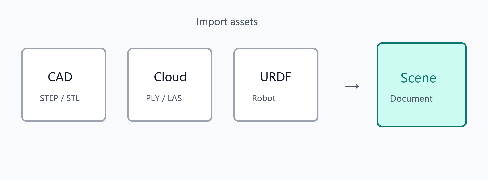

模型 / 点云 / URDF 导入
导入模型、点云与机器人
打开模型
文件 → 打开模型… 支持常见网格与 CAD 交换格式，例如：
- 网格：OBJ、STL、PLY、OFF、DXF、DAE、3DS、FBX 等
- B-rep：STEP、IGES 等
导入部分网格格式时，会提示网格质量（粗 / 中 / 细），影响离散精度与性能。
打开点云
文件 → 打开点云… 支持 PLY、LAS、LAZ、XYZ 等。
也可将文件拖放到主窗口，由当前文档接收导入。
导入机器人（URDF）
- 在设备页或相关入口选择 URDF
- 系统按连杆注册后端对象，并建立正运动学（FK）绑定
- 导入后可在仿真面板中示教、编程与回放
多机器人文档可同时存在多个机器人实例，各自独立维护关节与坐标系。